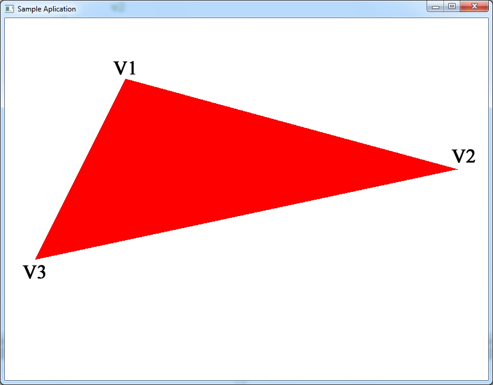

Загрузить архив с примерами ЗДЕСЬ.
Результат работы программы для данной главы показан на рисунке ниже:

В данном примере мы рассмотрим заливку треугольника сплошным цветом и закрасим сплошными цветами модель куба.
Как закрасить куб сплошными цветами при помощи функции WinAPI Polygon() загрузить проект можно /src/02.001-solid_cube/Solid_Cube1.
Как закрасить пирамиду сплошными цветами при помощи функции WinAPI Polygon() загрузить проект можно /src/02.001-solid_cube/Solid_Pyramida.
Всегда помним что обход вершин треугольника удобнее делать по часовой стрелке, слева- направо v1, v2, v3.
Для начала что бы понять суть проблемы рассмотрим как закрасить сплошным цветом (в нашем случае- красным) треугольник с плоским низом и треугольник с плоским верхом. Потом мы перейдем к описанию как наложить тем же методом на треугольник текстуру. Для наглядности процесса, закрашивать треугольник мы будем с помощью GDI функции SetPixel.
Для начала рассмотрим рисунок треугольника с плоским низом, закрашенного красным цветом. Нам нужно вычислить начальную точку xl и xr и приращение dxl и dxr для каждой стороны треугольника - левой и правой стороны.
//рисуем треугольник с плоским низом
//указываем начало линии и конец линии
float xl = x1;
float xr = x1;
//вычисляем наклон (приращение координат)
float dxl = (x3- x1) / (y3 - y1);
float dxr = (x2 - x1) / (y2 - y1);
//рисуем линии по высоте от y1 до y2
for (int y = y1; y < y2; y++)
{
//проводим линию от xl до xr на высоте y
Draw_Line(xl, y, xr, y);
//добавляем приращение для левой и правой стороны треугольника
xl += dxl;
xr += dxr;
}
Почему у нас идет:
//вычисляем наклон (приращение координат) float dxl = (x3- x1) / (y3 - y1); float dxr = (x2 - x1) / (y2 - y1);
То есть почему делим на (y3 - y1) и (y2 - y1)? А не скажем наоборот (1 - y3) и (y1 - y2)? Потому что когда мы рисуем один треугольник, мы проводим линии начиная с верхней точки (минимальное значение y) к нижней точке (максимальное значение y), то есть сверху экрана от y1 до y2 и от y2 до y3, поэтому у нас в формуле отнимаем от большей координаты y меньшую координату y, т.е. (y3 - y1) и (y2 - y1), т.е. мы рисуем линии (треугольник) сверху вниз.
Почему мы (x3 - x1) делим на (y3 - y1) и т.д. Почему координату x делим на координату y? Мы в цикле когда рисуем линии продвигаемся по y координате обязательно на 1 пиксель (от меньшего y к большему, сверху вниз), и поэтому мы должны знать насколько приращивать xl и xr поэтому мы координату x делим на координату y что бы знать во сколько раз координата x меньше (больше) координаты y.
Что бы добиться подобного результата- закрасить треугольник красным цветом, мы должны продвигаться вниз, по одной строке развертки за раз, от вершины V1 отдельно до вершины V2- левая сторона треугольника, и от V1 до V3- правая сторона треугольника. То есть нам нужно знать наклон левой стороны треугольника V1->V3 и наклон правой стороны треугольника V1->V2. Зная наклон, мы можем в цикле от V1.y до V2.y если у треугольника плоский низ (или от V1.y до V3.y если у треугольника плоский верх) рисовать одну красную линию. И так продвигаться в цикле вниз от V1 до V2. Вот как это просто выглядит в коде С++. Треугольник с плоским низом- работающий пример проекта данного кода можно загрузить /src/02.001-solid_cube/Color_Tri_Bottom.
//рисуем треугольник с плоским низом
void CMyApp::Render_Scene()
{
HDC hDC = GetDC(m_hWnd);
//координаты треугольника в экранных координатах
float x1 = 400.0f, y1 = 100.0f;
float x2 = 600.0f, y2 = 300.0f;
float x3 = 200.0f, y3 = 300.0f;
//указываем начало линии и конец линии
float xl = x1;
float xr = x1;
//вычисляем наклон (приращение координат)
float dxl = (x3- x1) / (y3 - y1);
float dxr = (x2 - x1) / (y2 - y1);
for (int y = (int)y1; y < (int)y2; y++)
{
//проводим линию красного цвета от xl до xr на высоте y
for ( int x = (int)xl; x < (int)xr; x++ )
{
SetPixel(hDC, x, y, RGB(255, 0, 0));
}
//добавляем приращение для левой и правой стороны треугольника
xl += dxl;
xr += dxr;
}
ReleaseDC(m_hWnd, hDC);
}
Рассмотрим рисунок треугольника с плоским верхом, закрашенного красным цветом.
Треугольник с плоским верхом- работающий пример проекта данного кода можно загрузить /src/02.001-solid_cube/Color_Tri_Top.
//рисуем треугольник с плоским верхом
void CMyApp::Render_Scene()
{
HDC hDC = GetDC(m_hWnd);
//координаты треугольника в экранных координатах
float x1 = 200.0f, y1 = 100.0f;
float x2 = 600.0f, y2 = 100.0f;
float x3 = 400.0f, y3 = 300.0f;
//указываем начало линии и конец линии
float xl = x1;
float xr = x2;
//вычисляем наклон (приращение координат)
float dxl = (x3 - x1) / (y3 - y1);
float dxr = (x3- x2) / (y3 - y2);
for (int y = (int)y1; y < (int)y3; y++)
{
//проводим линию красного цвета от xl до xr на высоте y
for ( int x = (int)xl; x < (int)xr; x++ )
{
SetPixel(hDC, x, y, RGB(255, 0, 0));
}
//добавляем приращение для левой и правой стороны треугольника
xl += dxl;
xr += dxr;
}
ReleaseDC(m_hWnd, hDC);
}
Теперь мы знаем как нарисовать треугольник с плоским низом, или с плоским верхом. Давайте посмотрим как треугольник с неравными сторонами (левой и правой) можно разбить на два- один треугольник с плоским низом, и одни с плоским верхом.
Алгоритм заливки сторон куба построен на том принципе, что мы делим один треугольник на два- сплоским низом и плоским верхом, и затем идем вниз по одной строке развертки за раз, рисуем сначала один треугольник- верхний, потом ниже второй треугольник- нижний. Если у треугольника нижняя или верхняя грань имеют одну высоту, то рисуеться либо верхний треугольник (так как треугольник снизу плоский) либо нижний треугольник (у треугольника вершины сверху плоский).
//рисуем треугольник с неравными сторонами (левая сторона v1->v3 длинее)
void CMyApp::Draw_Color_Poly(int y1, int y2)
{
for ( int y = y1; y < y2; y++ )
{
for ( int x = (int)xl; x < (int)xr; x++ )
{
SetPixel(hDC, x, y, RGB(255, 0, 0));
}
xl += dxl;
xr += dxr;
}
}
void CMyApp::Render_Scene()
{
hDC = GetDC(m_hWnd);
/*вершины треугольника
v1
v2
v3
*/
//левая сторона треугольника длиннее
float x1 = 400, y1 = 100;
float x2 = 550, y2 = 250;
float x3 = 250, y3 = 400;
xl = x1;
dxl = (x3 - x1) / (y3 - y1);
//рисуем верхний треугольник
xr = x1;
dxr = (x2 - x1) / (y2 - y1);
Draw_Color_Poly((int)y1, (int)y2);
//рисуем нижний треугольник
xr = x2;
dxr = (x3 - x2) / (y3 - y2);
Draw_Color_Poly((int)y2, (int)y3);
ReleaseDC(m_hWnd, hDC);
}
Загрузить код примера заливки треугольника сплошным цветом и разбивка треугольника на два (верхний и нижний- треугольник с плоским низом и треугольник с плоским верхом) можно /src/02.001-solid_cube/SolidTri.
Для того что бы разбить один треугольник на два (один с плоским низом и один с плоским верхом) надо знать какая сторона треугольника длиннее- левая или правая. Перед проверкой какая сторона треугольника длиннее вершины нужно отсортировать в такой порядке: y1 < y2 и y2 < y3 - то есть переставить их местами. Загрузить код примера вычисления какая сторона треугольника длиннее можно /src/02.001-solid_cube/Tri_Side. Для вычисления какая сторона треугольника длинее можно использовать следующий алгоритм.
#define SWAP(a,b,t) {t=a; a=b; b=t;}
void Side_Triangle()
{
float t;
int side = 0;
float x1 = 400, y1 = 100;
float x2 = 550, y2 = 250;
float x3 = 250, y3 = 400;
//сортируем вершины по оси Y
//что бы было v1.y < v2.y < v3.y
if( y2 < y1 )
{
SWAP(x2, x1, t);
SWAP(y2, y1, t);
}
if( y3 < y1 )
{
SWAP(x3, x1, t);
SWAP(y3, y1, t);
}
if( y3 < y2 )
{
SWAP(x3, x2, t);
SWAP(y3, y2, t);
}
//вычисляем какая сторона треугольника длиннее
//общего вида треугольник с неравными сторонами
if ( y2 > y1 && y3 > y2 )
{
//вычисляем наклон обеих сторон
//по знаку наклонов dxdy1 и dxdy2
//выясняем точка v3 (или грань v1->v3)
//слева или справа от v1 - после сортировки по y
//см.код выше, v3 всегда самая нижняя точка
//треугольника, длинне по Y
float dxdy1 = (x2 - x1) / (y2 - y1);
float dxdy2 = (x3 - x1) / (y3 - y1);
side = dxdy2 > dxdy1;
}
//треугольник с плоским верхом
if (y1 == y2)
side = x1 > x2;
//треугольник с плоским низом
if (y3 == y2)
side = x3 > x2;
if( !side )
{
printf("Longer is left side\n");
//рисуем треугольник у которого левая сторона длинее
}
else
{
printf("Longer is right side\n");
//рисуем треугольник у которого правая сторона длинее
}
}
Что значит "какая сторона треугольника длиннее"? Смотрим рисунок ниже.
Имеется в виду длиннее по высоте Y. Например по координате Х правая сторона V1->V2 треугольника может быть длинее чем левая. Но левая сторона V1->V3 по величине Y больше, т.е. имеется в виду та сторона треугольника длинее по координате Y, что больше по величине Y. Если мы отсортируем вершины как показано выше v1.y < x2.y < v3.y то сторона v1->v3 (например эта сторона слева) всегда будет длинее. Мы просто определяем с какой стороны эта сторона v1->v3 треугольника. Если v1->v3 с лева то dxdy2 = (x3 - x1) / (y3 - y1) будет отрицательным значением, т.к. x3 < x1, и x3 - x1 будет меньше нуля, а dxdy1 = (x2 - x1) / (y2 - y1) будет положительным т.к. x2 > x1. Если v1->v3 с права dxdy2 = (x3 - x1) / (y3 - y1) будет положительным значением а dxdy1 = (x2 - x1) / (y2 - y1) будет отрицательным.
Загрузить код примера разбивки треугольника на два, вычисления какая сторона треугольника длинне, рисование треугольника, можно /src/02.001-solid_cube/SolidTri_Side.
Теперь мы знаем как нарисовать треугольник с плоским низом, или с плоским верхом, мы знаем как разбить треугольник на два- один с плоским низом и с плоским верхом, мы можем перейти к рисованию сторон куба, куб будет вращатся.
Загрузить код примера вариант #1 заливки сторон куба сплошным цветом (функция DrawDibDraw) можно /src/02.001-solid_cube/Solid_Cube2. В этом примере у нас есть куб из 12 треугольников. Для каждого треугольника мы зададим свой цвет. У нас будет массив m_color_array который хранит цвета для 12 треугольников (см.функцию Init_Cube). Мы случайно выбираем цвет треугольника при помощи функции rand():
for (unsigned int i = 0; i < m_nTriangleCount; i++)
{
m_color_array[i].r = rand() % 255;
m_color_array[i].g = rand() % 255;
m_color_array[i].b = rand() % 255;
}
Загрузить код примера вариант #2 заливки сторон куба сплошным цветом (функция BitBlt и SetPixel) можно /src/02.001-solid_cube/Solid_Cube3. В этом примере у каждого треугольника куба тоже свой цвет, но в примере треугольники на одной стороне куба имеют свой цвет. То есть каждая сторона куба закрашена своим цветом (2 треугольника одинакового цвета на одной стороне куба). В приложении в функции Init_Cube есть массив m_color_buff из 12 элементов которых хранит цвета для всех 12 треугольников куба. В прошлом примере при помощи функции rand() мы случайно выбирали цвет для треугольника, в этом примере мы определим цвет для каждой стороны треугольника при помощи функции rand(). Всего в кубе 12 треугольников, каждая сторона имеет 2 треугольника, т.е. 12 поедлить на 2 будет 6 сторон куба. Если количество треугольников в кубе поделить на 2 мы узнаем количество сторон куба. Так как у нас в массиве индексов треугольники для каждой стороны лежат последовательно, то мы можем заполнить два соседних элемента массива цветов m_color_buff и это будет залика одной стороны куба.
for (unsigned int i = 0; i < m_nTriangleCount / 2; i++)
{
int r = rand() % 255;
int g = rand() % 255;
int b = rand() % 255;
m_color_buff[i * 2].r = r;
m_color_buff[i * 2].g = g;
m_color_buff[i * 2].b = b;
m_color_buff[i * 2 + 1].r = r;
m_color_buff[i * 2 + 1].g = g;
m_color_buff[i * 2 + 1].b = b;
}
Как устроена функция Draw_Colored_Triangle(). Первое- мы сортируем вершины что бы v1.y < v2.y < v3.y. Это происходит в коде:
#define SWAP(a,b,t) {t=a; a=b; b=t;}
void CMeshManager::Draw_Colored_Triangle(float x1,float y1,
float x2,float y2,
float x3,float y3)
{
float t;
int side;
//сортируем вершины что бы v1.y < v2.y < v3.y
if( y2 < y1 )
{
SWAP(x2, x1, t);
SWAP(y2, y1, t);
}
if( y3 < y1 )
{
SWAP(x3, x1, t);
SWAP(y3, y1, t);
}
if( y3 < y2 )
{
SWAP(x3, x2, t);
SWAP(y3, y2, t);
}
Второе- мы должны определить какая сторона треугольника по Y длинее. Здесь возможны три ситуации, что бы определить какая сторона треугольника по Y длинее. 1)треугольник общего вида с неравными сторонами, 2)треугольник с плоским верхом, 3) треугольник с плоским низом. Для всех этих случаев мы определяем какая сторона треугольника по Y длинее. Это происходит в коде:
//общего вида треугольник с неравными сторонами
if ( y2 > y1 && y3 > y2 )
{
float dxdy1 = (x2 - x1) / (y2 - y1);
float dxdy2 = (x3 - x1) / (y3 - y1);
side = dxdy2 > dxdy1;
}
//треугольник с плоским верхом
if (y1 == y2)
side = x1 > x2;
//треугольник с плоским низом
if (y3 == y2)
side = x3 > x2;
Третье- мы рисуем сам треугольник- сначала верхнюю часть потом нижнюю. Это происходит в коде:
if( !side ) //если side == 0 левая сторона по Y длиннее
{
m_xl = x1;
m_dxl = (x3 - x1) / (y3 - y1);
if ( y1 < y2 ) //треугольник с плоским низом x3 < x2
{
m_xr = x1;
m_dxr = (x2 - x1) / (y2 - y1);
Draw_Color_Poly((int)y1, (int)y2);
}
if ( y2 < y3 ) //треугольник с плоским верхом x1 < x2
{
m_xr = x2;
m_dxr = (x3 - x2) / (y3 - y2);
Draw_Color_Poly((int)y2, (int)y3);
}
}
else
{
m_xr = x1;
m_dxr = (x3 - x1) / (y3 - y1);
if ( y1 < y2 ) //треугольинк с плоским низом x3 > x2
{
m_xl = x1;
m_dxl = (x2 - x1) / (y2 - y1);
Draw_Color_Poly((int)y1, (int)y2);
}
if ( y2 < y3 ) //треугольник с плоским верхом x1 > x2
{
m_xl = x2;
m_dxl = (x3 - x2) / (y3 - y2);
Draw_Color_Poly((int)y2, (int)y3);
}
}
Как закрасить сплошными цветами сферу (разноцветная сфера) проект можно загрузить /src/02.001-solid_cube/Solid_Sphere.